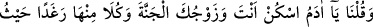
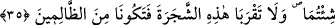
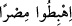

kadar ömrün yoksa Allah’dan faydalanamayacağın şeyi istemiş olursun.”
Ebu’d-Derdâ (r.a.) Peygamberimiz (s.a.)’den şöyle rivâyet etmiştir: “Güneş
doğarken ve batarken, görevli iki melek insanların ve cinlerin dışında bütün
varlıkların duyabileceği bir sesle yeryüzüne seslenirler. Güneş doğarken: Ey
insanlar, Rabbinize koşun; az da olsa mikdar-ı kâfî olan şey, çok fakat meşgul
edenden daha hayırlıdır derler. Güneş batarken de: “Allah’ım infâk edenin malını
çoğalt, cimrinin de malını telef et” diye duâ ederler.
Mesnevî’de gelmiştir:
Hakk rızâsı için ekmek verirsen sana ekmek verirler.
O’nun için can verirsen, sana onun yerine can verilir.
35. Biz: Ey Âdem! Sen ve eşin (Havvâ) beraberce cennete yerleşin; orada
kolaylıkla istediğiniz zaman her yerde cennet nimetlerinden yeyin; sadece şu ağaca
yaklaşmayın. Eğer bu ağaçtan yerseniz her ikiniz de kendine kötülük eden
zâlimlerden olursunuz, dedik.
Kurtubî Tefsîri’ne göre Allah Teâlâ şeytanı cennetten kovduktan sonra, Âdem’e
cennete yerleşmesini ve orayı kendine mesken edinmesini emretmiştir. Çünkü cennet
sükûn yeridir. Burada sükûn, hareketin zıddı olan durgunluk anlamında değil, istikrâr
bulmak mânâsındadır.
Kişi hanımına zevc veya zevce diyebilir, ancak Ebu’l-Leys Tefsîri’nde de denildiği
gibi; zevc daha fasîhdir. Allah Teâlâ; ikamet husûsunda erkeğin asıl olmasından dolayı
başlangıçta Havvâ’ya hıtâb etmemiş onu Âdem’e tâbi kılmıştır.
Âyette geçen “Cennet” üzerinde ihtilâf olunmuştur. Müfessirler cennetin “mükâfat
yurdu” olduğunda icmâ etmiştir. Kur’ân’da inmek mânâsına geçen “hübût” kelimesini
de “Bu bahçeden Hindistan’a intikal etme” şeklinde tevil etmişler ve buna (
)
âyetindeki “şehre giriniz” (el-Bakara, 2/61) mânâsına gelen “hübût” emrini, delîl
göstermişlerdir. Ancak bize göre bu delîl, pek sağlam değildir. Çünkü hübût kelimesi,
kendi mânâsında kullanılması imkânsız olduğunda intikal mânâsına tevil edilebilir.
Âdem’in cennetten hübûtunda ise te’vîle gerek yoktur.
Hz. Havvâ’nın, Âdem (a.s.)’in cennete girişinden önce mi yoksa sonra mı yaratıldığı
husûsunda ihtilâf vardır. İbn Abbas (r.a.)’den gelen rivâyete göre Allah Teâlâ,
meleklerden bir ordu göndermiş; Âdem ve Havvâ’yı yâkut, inci ve zümrüdlerle süslü
altın bir döşek üstünde cennete taşımışlardır.
Abdullah İbn Mesûd’dan Havvâ’nın cennette yaratıldığına dâir rivâyet de şöyledir: